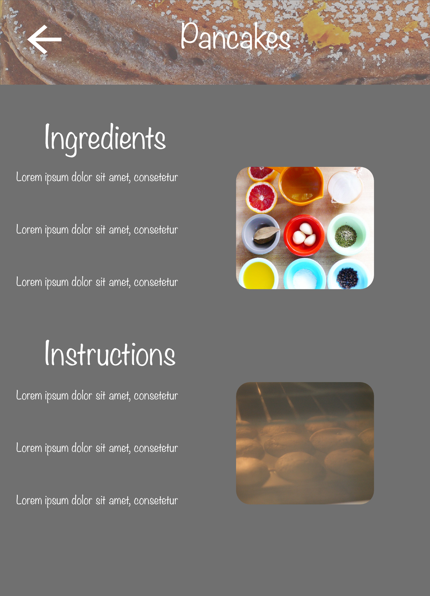

Recipe Blog
Blog Website Prototype

Victoria
Pearl
Blog Website Prototype
The goals of this assignment were to create a simple prototype with interactions that could be implemented in HTML/CSS. I was able to use buttons and images to simulate ease in transitions between links.

This prototype was designed using Adobe XD and implemented with HTML/CSS. For example, each recipe image may be linked to transition to the recipe item page. The back button is able to simulate ease in and out transitions from item pages to home pages.